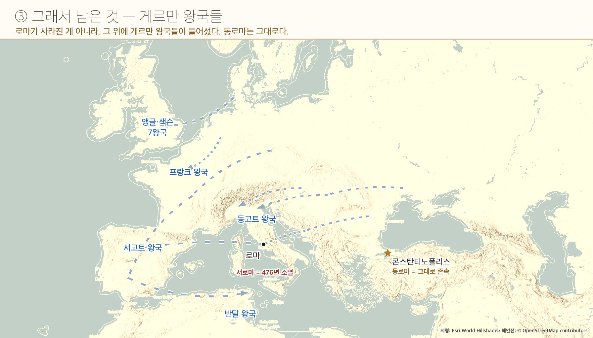

답은 칼이 아니라 줄서기였어.
누구 편에 서느냐가 200년 뒤의 유럽 지도를 갈랐거든.

서로마 황제는 사라졌어(476).
군대도, 세금 걷는 관청도 흩어졌지.
도시마다 교회가 있었고, 그 중심이 로마의 주교였어.
이 로마 주교를 교황이라 불러.
🎙️ 그러니까 로마 교회 = 서유럽 교회들의 본부, 그 우두머리가 교황.
나라가 사라진 자리에 남은 유일한 전국 조직이었어. 글을 아는 사람도 여기 다 있었고.
당시 크리스트교 안에는 예수를 어떻게 볼 것인가를 두고 갈래가 나뉘어 있었어.
게르만족이 서유럽에 세운 여러 나라 중 갈리아 지방에 자리 잡은 프랑크 왕국은 오랫동안 번성하였다. 5세기 말 프랑크 왕국은 크리스트교를 받아들여 로마 교회의 지지를 얻었다.8세기 초에는 서유럽에 쳐들어온 이슬람 세력을 막아 내며 크리스트교 세계를 보호하였다.
🎙️ 교과서 한 문장이 두 가지 이득을 압축해 놨어.
① 교황의 지지 · ② 로마계 주민의 인정.
800년 12월 25일, 카롤루스 대제는 로마 교황 레오 3세에게서 서로마 황제의 관을 받았다. 카롤루스 대제는 이탈리아에서 교황을 위협하는 세력을 없애고 크리스트교를 널리 전하고자 힘쓴 점을 인정받았다. 이는 게르만족이 세운 프랑크 왕국이 로마의 계승자이며, 비잔티움 제국의 황제는 더 이상 크리스트교 세계의 유일한 황제가 아니라는 것을 의미하였다.
🎙️ 라파엘로 그림 속 사람들의 옷과 모자를 봐. 저건 800년이 아니라 화가가 살던 16세기 차림이야.
게다가 이 그림은 교황이 주문했어. 그럼 누가 더 커 보이게 그렸을까?
→ 그림은 사건의 사진이 아니라, 그린 사람의 시대와 의도가 담긴 자료야.
말로만 들으면 뜬구름이지. 손에 잡히는 것으로 바꿔 보자.
🎙️ 카롤루스 자신이 이 셋을 합친 사람이야 — 게르만족 왕인데, 라틴어 문서로 나라를 다스리고, 교회에서 왕관을 받았거든.
황제가 사라진 자리에 교회만 남았어.
그 사이 교황은 스스로 권위를 갖게 됐지.
→ 나중에 왕과 교황이 부딪치는 이유
황제가 끊기지 않고 계속 있었어.
그러니 교회도 황제 아래에 있었지.
→ 다음 시간의 주제